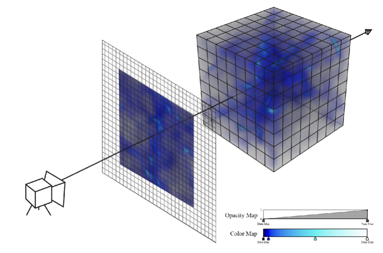

Please see the Land Acknowledgment in the Syllabus.
More information can be found on the Chancellor’s Website.
notes: we are on a land-grant institution, please see the link on the chancellors page for more info about thi
Please see the statement about policies related to COVID-19 at the top of the Syllabus.
60 for this course!
Strategies:
notes: so, we have 60 students in this class, this is a large class!
we will go over some of these strategies in detail, but I wanted to give you an overview of somethings that we are doing to cover everybody AND some things you can do to help us and your fellow classmates out
the first thing is we have an extra >12 hours of help time outside of class to answer questions in the form of office hours (more details next slide)
also, we will have a Slack channel (more on that in a moment) where you can get more quick responses from the instructional team if you post in the channel for a specific homework or (less ideal) #general channel
finally, we have several assignments that can be turned in as a group to allow for collaboration between folks in the class – we’ll talk about those assignments as we come to them
Jill P. Naiman - jnaiman@illinois.edu
TA: Leon Hounnou - hounnou2@illinois.edu
TA: Qiuyan Guo - qqguo2@illinois.edu
Course website: https://uiuc-ischool-dataviz.github.io/is445_bcubcg_fall2023/
notes:
Here are some of those hours of office hours for you. We are still working on finalizing this and will add some more!
So you see that we have LOTS of office hours throughout the week – this is with the idea that folks may be in and out of class as illness/etc happens (but hopefully doesn’t!)
TA’s introduce themselves if they are on Zoom
Again, we want to make sure there are lots of support for folks that have questions
Note that we have a shared canvas space across two sections (more on that in a moment) but seperate webpages where materials are
Now, the website! go through website!!
Canvas: https://canvas.illinois.edu/courses/37444 - where the grades and assignments links will be posted
PrairieLearn: https://us.prairielearn.com/pl/course_instance/137563 - where assignments will be completed
Course webpage: https://uiuc-ischool-dataviz.github.io/is445_bcubcg_fall2023/ - where lecture slides, notebooks, data & general course info will live.
Slack: https://is445-fall2023.slack.com/ - the best place to ask questions in a #homeworkX-questions channel (or the #general channel for general questions)
notes:
A few notes about this semester – while assignments will be posted on Canvas, the actual completion of the assignments will take place on the PrairieLearn platform. We will discuss this in more detail when we get to looking at homework stuff, but in short these will be “online” cloud notebooks that have all the packages you need already installed so you don’t have to install (too many) things on your local machine
Also, we will be utilizing Slack for discussing homeworks with a dedicated channel for each assignment. Again, more on this when we get to looking at the homework (as part of your homework is to say hi on slack!)



Naiman et al. 2017, Borkiewicz et al. 2018

Naiman et al. 2017, Borkiewicz et al. 2018

Naiman et al. 2017, Borkiewicz et al. 2018

Naiman et al. 2017, Borkiewicz et al. 2018

Naiman et al. 2022, TPDL conference
notes: also do some science digitization, i.e. trying to turn scans of old scientific figures back into data by having computers “read” objects and axis labels using image processing, optical character recognition and machine learning methods
On a piece of paper or in notes on your computer:
notes: We’re going to use these pieces of data to explore how we might approach visualization. Each of these items is a different type of data – qualitative, quantitative, elements drawn from sets, and sets of numerical data.
Trying to visualize each one will give us a basic idea of how we might think about these types of data, and how we approach visualizing them.
Visualize the results of your group’s collective “data”.
Don’t forget to say hi to eachother!
notes:
What was easy/hard about visualizing the various datasets? How did you do it?
Feel free to do this on your own if you are more comfortable that way.
We have to do it!
notes: This is a rough syllabus! These are many of the topics we will cover, but based on how the course proceeds and how folks respond, we may shorten or lengthen different topics.
The organization here is designed to start out slow, dealing with how to program python for visualization, understanding how data is laid out, which operations we can apply to that data, and then moving on to representing data in different ways.
We might start getting into javascript earlier, depending on how we are doing.
be aware: that we are trying out some “flipped” classes for this semester around the harder assignments so folks can get extra help – this will happen around Week 6 and the final projects. This just means that you are expected to watch the recording before the class and then come to the class with quesstions about the assignment.
Also, I will be out of town during Week 6 so we might move some due dates of assignments around and/or have extra office hours that week with the TA’s
notes: Toward the end of class we are going to have a slightly more free-form set of discussion points. Your final projects will be somewhat open-ended, requiring more group work and collaboration than the preceding assignments.
Here the weeks get a little off between the in-person and online classes because of the election day holiday and this is also reflected in the Canvas page. We’ll be working on final project stuff then, so it shouldn’t be an issue too much.
notes: basically, we’ll start with the basics - I’m assuming you are coming in with Python experience
IS430 + a programming project
or
IS205 + one more Python-based programming class
or
Equivalent informal Python background
notes: so what do I mean by “python experience”? Here are some rough guidelines for courses
Since there are no enforced pre-reqs, you can also get Python experience in industry as well
Basically, I’m expecting that you understand all the logical operations like if-then, for loops, are comfortable using external libraries, and reading/writing and manipulating data to some extent – check out the prep notebooks for the level that is expected
I am also expecting that you have some experience not just doing python homeworks assigned in a class, but also doing a small project on your own where you had to practice some debugging, looking up answers on stackoverflow, etc
also be aware: as this is a graduate-level course, the homeworks will build on concepts we cover in class but may require extra out-of-class work on your behalf in cluding, but not limited to, coming to office hours and/or reaching out on slack
IS430 + a programming project
or
IS205 + one more Python-based programming class
or
Equivalent informal Python background
Extra coding help: https://ischool.illinois.edu/student-life/academic-support-center (see Tutoring by Subject and Skill)
notes: that being said, I have had students that were just starting off in their programming journeys be successful in this class, but just be aware its going to require extra time commitement
In addition to all of the hours of office hours, you should check out the academic support center, in particular the Tutoring by Subject and Skill where you can find Python tutors
IS430 + a programming project
or
IS205 + one more Python-based programming class
or
Equivalent informal Python background
Extra coding help: https://ischool.illinois.edu/student-life/academic-support-center (see Tutoring by Subject and Skill)
If you already know a good bit of viz for the web - check out IS545, Advanced Data Visualization.
notes: this course is NOT meant for folks that have already been doing a lot of data viz for a while, and who have been using web visualization tools like react, etc for a while. If that is you, what you probably want to take is the advanced data viz class, IS545
New-ish computer
Have been keeping it updated to most recent-ish operating system
(If not, just let us know!)
notes: Assignments will mostly be done on the PrairieLearn platform, however there will be a few things you need to install locally, so there are some assumptions I am going to make about the computer you are using for this class.
Now if you do have an older computer or haven’t updated the OS in a while, please reach out to us ASAP! This doesn’t mean you can’t take this class, but it does mean we might need to get you a loaner laptop or see about having IT update your OS for you.

notes: ok, a few questions I sometimes get asked, starting with how much work is this class?
be aware that this was from a survey that generally happens ~1/2 way through the course, so later parts of the course might take more effort
some folks find the HW doesn’t take that long, but others do say it takes longer – I suspect this has to do with Python/programming background but since I didn’t want identifying info in the survey I can’t be certain
This is an introduction to data visualization - we will focus on the fundamentals that underlie all visualization tools.
notes:
another question I get asked a lot is why aren’t we learning Tableau or PowerBI or whatever the data viz software “flavor of the moment” is that we want to not only understand how to make visualizations but what design choices and data links are necessary to create data visualizations.
This is an introduction to data visualization - we will focus on the fundamentals that underlie all visualization tools.
(and we are focused on open source tools)
notes:
Plus we are focusing only on open source tools
This is an introduction to data visualization - we will focus on the fundamentals that underlie all visualization tools.
(and we are focused on open source tools)
… but check out:
notes:
Some of the most common I get asked about are Tableau and PowerBI - if you already have an introduction to data viz and have built some of your own tools “from scratch” and just want to learn some new software here are some links for Tableau tutorials and PowerBI tutorials that you have access to as a UIUC student
Though do check out the press about the Tableau lay offs and decide if you want to put in the time to learn this software – of course having the background data viz that you will learn in this course will help you jump between software when one tool breaks!
(Today will be a little lecture heavy)
Some classes will be flipped!
notes:
This structure will likely be deviated from during the course, but in general
we will start with lecture, then continue with collaborative or
hands-on exercises using group coding.
We will try to have a little 5 minute break in class for folks to stretch/run to the bathroom.
During the group coding, I might lead the class in some visualization in Python, Javascript, or something else. During this section, I expect that students will follow along with what is going on – typing in the specific commands, and maybe even trying different things as we go. It is not meant to simply be a “performance” of coding, but instead an opportunity to learn.
YOU HAVE THE NOTES BEFORE CLASS.
final reminder – some of the classes will be flipped!
notes: Your weekly-idh assignments will take different forms. The first assignment will be mostly some “getting to know prairielearn” assignments and test installations, but subsequent assignments will be either notebook (coding) based or prose-based as well.
Labs will be jupyter notebook and coding based, however you can get “instant” feedback on your submission and hints for how to update your assignment if you do not get full points.
The final project will be described later in class, but will take the form of a group project that touches on coding as well as visual design.
We will drop the lowest homework score, however there are some required assignments.
notes:
part of the syllabus quiz will be checking out the HW policies in more detail – we will drop the lowest HW score, however there are several assignments you must submit and get above a certain grade on to pass the class – these are installation assignments and those that are considered “prepratory” for the final project
notes: Just a few more details about homework type assignments
notes: Again, we’ll discuss Labs more later in the week/next week, but the take away is that these are meant to be ways for you to practice coding/viz skills and get automatic feedback.
We will also have time in class, typically on Thursdays, for you to work on these assignments.
notes: Quizzes are meant to be quick checks of the material covered in class
You can repeat quiz questions multiple times, however you will be peanalized for wrong answers, so be sure that you aren’t just guessing on these!
These are still being developed, but we expect there to be about 12 throughout the course
See the course syllabus:
https://uiuc-ischool-dataviz.github.io/is445_bcubcg_fall2023/syllabus.html
notes: These are TOTally optional - more on that in a minute.
notes: When programming, I expect that you will do things like search on the internet to find help with a given problem. This is fine.
But, you must cite where any code snippets came from. And you must note if you are working with other people in the group!
Using snippets of code is fine – but you may not copy large-scale amounts of code from other work (for example, other visualizations) and pass it off as your own. Always cite, and be reasonable in what you utilize.
notes: You will be expected to write code in Python, and to learn the very basics of Javascript. Your projects may be turned in via git. We will also utilize Slack for class communication.
These tools represent many different ways to explore and visualize data. We’ll use a mix of local installations & web-services.
In approximate order:
There’ll be a few more along the way.
notes: This class is not meant to teach you a given tool, but instead a way of thinking about using visualization tools. These tools are chosen because of what they represent, not because they are the only paths to success.
We will be sharing a slack channel with the in-person class, so feel free to converse with them as well!
https://is445-fall2023.slack.com
#general : General announcements, place to ask questions#random : see a cool viz you want to share? This is the place!#introduce-yourself : where you want to “say hi” for Homework #1#ASSIGNMENTX-questions : each assignment will have a channel for asking questions specific to that assignment@ sign appropriately: @[person], @here, @channelnotes: Please use slack as much as you need! You can use it to share items and articles with the class, to collaborate, to discuss and ask questions and get feedback. However, please do behave in a professional fashion.
@ sign appropriately: @[person], @here, @channelSlack turn-around time ~24 business hours or less (general/section channel), email ~3 business days or less
Questions about grades should always be over email.
notes: We aim for turn-around times for slack to be 24 hours or less when questions are posted to the general channel for others to see/comment on
personal questions (like about grades) should be over email
personal messages on slack will be treated as email and we’ll get back to you within 3 days or less
notes: All the materials for this course will be stored in github, and are available under a very permissive license. It is largely written in markdown and automatically compiled to web pages when changes are made.
You are invited to clone the repo, fork and submit changes (typos, etc!), and to use any information in it in the future.
There are 3 pathways (that I can see in this course, could be more!)
There are 3 pathways (that I can see in this course, could be more!)
There are 3 pathways (that I can see in this course, could be more!)
There are 3 pathways (that I can see in this course, could be more!)
notes: a few other suggestions about how to do well in this course
notes: at this stage - go over the “log onto Slack”, “syllabus quiz” and “intake survey” parts of the assignment
we will get to the Python notebook “Introduction to PrairieLearn” sections next class period